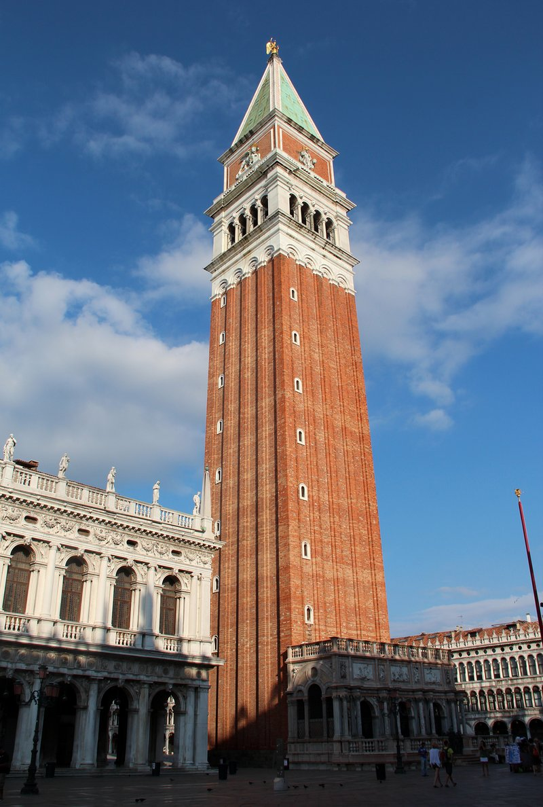
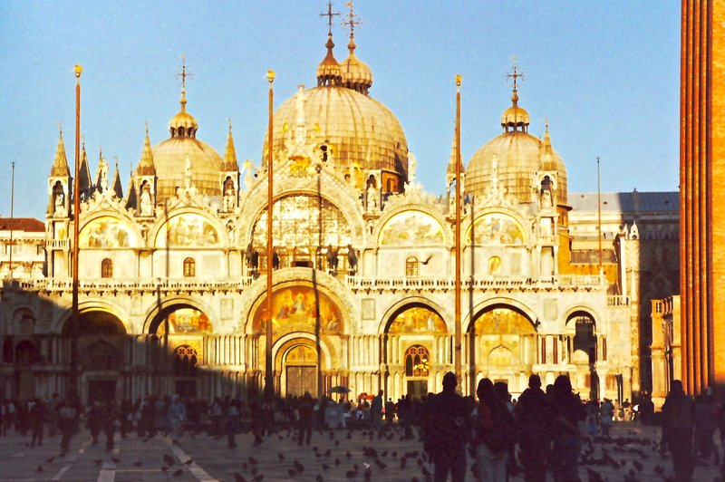
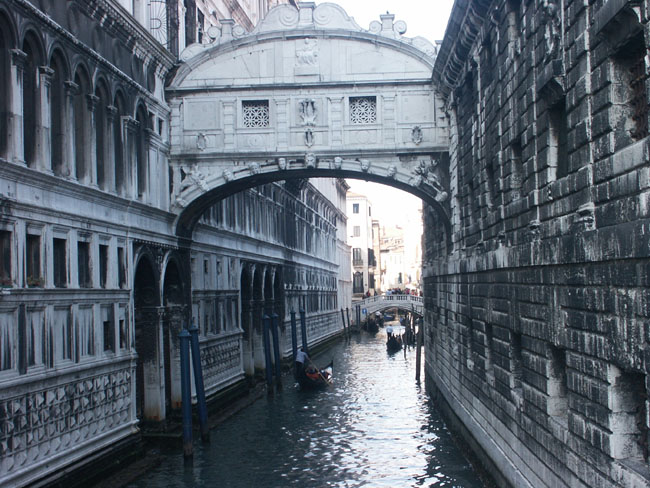
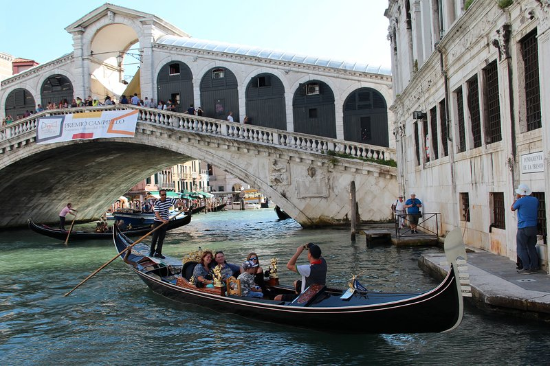
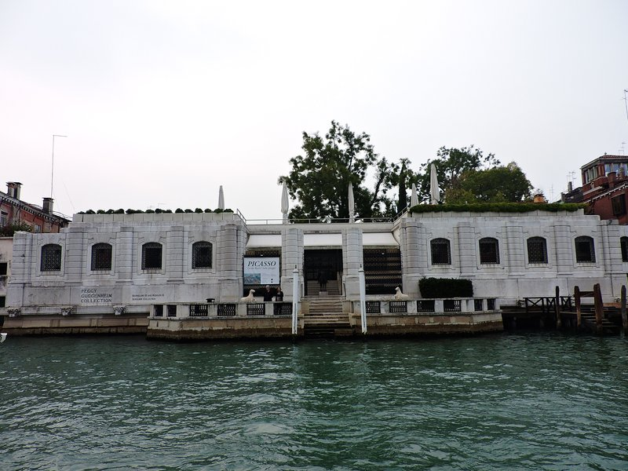
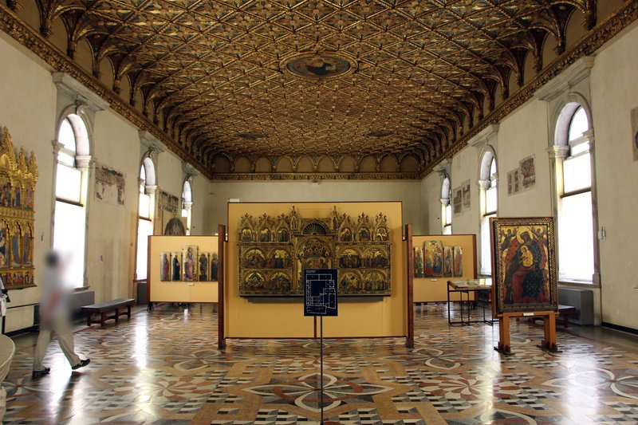
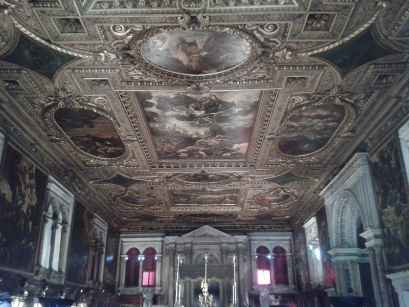

TRIP OVERVIEW
Day 1 – St Mark's Basilica · St Mark's Campanile · Doge's Palace · Bridge of Sighs · Rialto Bridge
Day 2 – Santa Maria della Salute · Peggy Guggenheim Collection · Gallerie dell'Accademia · Scuola Grande di San Rocco
Day 1
🏨 From Hotel: 🚶 9 min · 🚤 5 min → St Mark's Basilica
1. St Mark's Basilica
↳ Venice's golden cathedral, begun in 1063 to house the relics of St Mark. Its five-domed Italo-Byzantine facade and interior of more than 8,000 square metres of gold-ground mosaics make it the most opulent church in Italy — the jewelled Pala d'Oro and the bronze Horses of Saint Mark are inside.

🚶 1 min · 🚤 1 min → St Mark's Campanile
2. St Mark's Campanile
↳ The 98.6 m brick bell tower of the basilica, first raised in the 9th century and rebuilt exactly after its 1902 collapse. An elevator climbs to the top for the finest panorama in Venice — the rooftops, the lagoon, and on clear days the Dolomites.

🚶 2 min · 🚤 2 min → Doge's Palace
3. Doge's Palace
↳ The seat of Venetian power for a thousand years — a Venetian Gothic masterpiece of pink-and-white marble loggias over the Piazzetta. Inside are the vast Chamber of the Great Council, Tintoretto's "Paradise," gilded state apartments, the armoury, and the prisons reached across the Bridge of Sighs.

🚶 1 min · 🚤 1 min → Bridge of Sighs
4. Bridge of Sighs
↳ The enclosed white-limestone bridge of 1600 that carried prisoners from the Doge's Palace interrogation rooms to the New Prison. Its name is Romantic-era legend — the sighs of convicts glimpsing the lagoon a last time. The classic view is from the Ponte della Paglia on the waterfront.

🚶 10 min · 🚤 6 min → Rialto Bridge
5. Rialto Bridge
↳ The oldest and most famous bridge across the Grand Canal, completed in stone in 1591 by Antonio da Ponte. A single 28 m marble arch lined with shops, it links San Marco to the Rialto market district and frames the canal's grandest view.

🚶 14 min · 🚤 7 min → hotel
Day 2
🏨 From Hotel: 🚶 18 min · 🚤 6 min → Santa Maria della Salute
1. Santa Maria della Salute
↳ The great white octagonal Baroque church that crowns the entrance to the Grand Canal, built by Baldassare Longhena from 1631 as the city's thanksgiving for deliverance from the plague. Its vast dome is a defining silhouette of Venice; inside hang Titian and Tintoretto canvases.

🚶 3 min · 🚤 3 min → Peggy Guggenheim Collection
2. Peggy Guggenheim Collection
↳ The unfinished one-storey Palazzo Venier dei Leoni on the Grand Canal, home of heiress Peggy Guggenheim from 1949 and now one of Europe's great modern-art museums — Picasso, Pollock, Ernst, Magritte, Brancusi, and Marino Marini's bronze rider in the canal-side garden.

🚶 5 min · 🚤 4 min → Gallerie dell'Accademia
3. Gallerie dell'Accademia
↳ The supreme collection of Venetian painting, housed in the former Scuola della Carità at the foot of the Accademia Bridge. Five centuries of Bellini, Giorgione, Carpaccio, Titian, Veronese and Tintoretto — including Giorgione's "Tempest" and Leonardo's "Vitruvian Man."

🚶 13 min · 🚤 8 min → Scuola Grande di San Rocco
4. Scuola Grande di San Rocco
↳ A confraternity hall near the Frari that Tintoretto spent 24 years filling — more than 60 vast canvases of biblical scenes covering walls and ceilings, his answer to the Sistine Chapel. The Sala dell'Albergo's "Crucifixion" is among the most overwhelming paintings in Italy.

🚶 14 min · 🚤 8 min → hotel
🗓️ Weekly Closures
No notable city-wide weekly closures in Venice.
📅 Tours
Viator
↳ Full-day small-group highlights — Rialto and the fish market, a gondola cruise on the Grand Canal, the gold mosaics of St Mark's Basilica, and skip-the-line entry to the Doge's Palace with a local guide.
🕐 8:15am · ⏳ 6 hr · 👥 max 25
🚶 9 min · 🚤 5 min
☕ Cappuccino
Caffè Florian 3.9⭐ · 7573+ reviews
Gran Caffè Quadri 3.7⭐ · 908+ reviews
Pasticceria Tonolo 4.6⭐ · 2950+ reviews
🏛️ Tuesday - Sunday 7:30am - 8:00pm
🚫 Closed Monday
🚶 13 min · 🚤 6 min
🫕 Restaurants Near Hotel
Osteria Al Bacareto 4.0⭐ · 908+ reviews
↳ Long-standing osteria near La Fenice — cicchetti, pasta, meat classics.
🏛️ Monday - Saturday 12:00pm - 3:00pm · 7:00pm - 10:30pm
🚫 Closed Sunday
🚶 6 min · 🚤 4 min
Harry's Bar 3.7⭐ · 4230+ reviews
↳ Classic Venetian — birthplace of the Bellini and beef carpaccio.
🏛️ Daily 10:30am - 11:00pm
🚶 7 min · 🚤 4 min
Ristorante Quadri 3.6⭐ · 259+ reviews
↳ Michelin-starred contemporary Venetian dining over Piazza San Marco.
🏛️ Tuesday - Sunday 12:00pm - 2:30pm · 7:00pm - 10:30pm
🚫 Closed Monday
🚶 8 min · 🚤 4 min
🍽️ Downtown Restaurants
Osteria La Zucca 4.5⭐ · 3152+ reviews
↳ Famous for inventive vegetable dishes and seasonal Venetian cooking.
🏛️ Monday - Saturday 12:30pm - 2:30pm · 7:00pm - 10:30pm
🚫 Closed Sunday
Bistrot de Venise 4.6⭐ · 2674+ reviews
↳ Historic Venetian recipes revived from old cookbooks, deep wine list.
🏛️ Daily 12:00pm - 2:30pm · 6:45pm - 10:30pm
Cantina Do Mori 4.4⭐ · 1100+ reviews
↳ The oldest bacaro in Venice from 1462 — cicchetti and wine by Rialto.
🏛️ Monday - Saturday 8:00am - 7:30pm
🚫 Closed Sunday
Cantine del Vino già Schiavi 4.7⭐ · 2913+ reviews
↳ Canal-side Dorsoduro wine bar famed for cicchetti — Al Bottegon.
🏛️ Monday - Saturday 8:30am - 8:30pm
🚫 Closed Sunday
🍮 Local Tastes
Cicchetti
↳ Venetian small bites — crostini, polpette, fried seafood and baccalà — eaten standing at a bacaro with a glass of wine.
Sarde in Saor
↳ Sweet-and-sour marinated sardines layered with slow-cooked onions, pine nuts and raisins — the signature Venetian agrodolce.
Risotto al Nero di Seppia
↳ Creamy risotto turned glossy black with cuttlefish ink, a lagoon classic served with tender squid.
Baccalà Mantecato
↳ Salt cod whipped with olive oil into a silky cloud, spread on grilled white polenta — the king of cicchetti.
Aperol Spritz
↳ Aperol, prosecco and soda over ice with an olive — the aperitivo born in the Veneto and poured all over Venice at sundown.
🎭 Shows, Performances & Concerts
Teatro La Fenice
↳ Venice's grand opera house, twice rebuilt after fire — opera, ballet and symphonic seasons in a gilded 18th-century jewel box.
🚶 5 min · 🚤 3 min
Musica a Palazzo
↳ Immersive chamber opera staged room by room through a Grand Canal palazzo — Verdi and Puccini steps from the audience.
🚶 2 min · 🚤 2 min
Interpreti Veneziani
↳ Vivaldi and Baroque concerts on period instruments in the candlelit church of San Vidal — the definitive Venice music night.
🚶 6 min · 🚤 4 min
🚌 Getting Around
🚕 Ride Apps
🚢 Ferry
↳ Vaporetto water-bus — Line 1 and Line 2 run the Grand Canal.
Venice has a ferry — operated by ACTV. Route: Piazzale Roma → San Marco.
🚆 Train Stations Near Hotel
🚄 Venezia Santa Lucia
Trenitalia & Italo → Padua · Verona · Florence · Milan · Rome.
🚶 26 min · 🚤 13 min
⛲️ Day Trips by Train
Padua · 25 min
↳ Giotto's breathtaking Scrovegni Chapel frescoes, the great Basilica of St Anthony, and the grand Caffè Pedrocchi — a fast, easy hop on the train.
🎫 book at: trenitalia.com or Omio
Vicenza · 30 min
↳ Palladio's UNESCO city of villas and the astonishing Teatro Olimpico, the oldest surviving indoor theatre in the world.
🎫 book at: trenitalia.com or Omio
Ferrara · 35 min
↳ A perfectly preserved Renaissance city — the Este dynasty's Castello Estense rising above the old town, UNESCO-listed Renaissance streets on a grid plan, and the Palazzo dei Diamanti with its 8,500 marble pyramids. Direct regional trains run regularly.
🎫 book at: trenitalia or Omio
Verona · 1h 10 min
↳ The Roman Arena that still stages summer opera, Juliet's balcony, and a romantic UNESCO old town on the Adige river.
🎫 book at: trenitalia.com or Omio
Bologna · 1h 20 min
↳ Italy's food capital — 40 km of arcaded porticoes through a medieval old town, the leaning Asinelli and Garisenda towers, and the Emilian table that gave the world ragù, mortadella and tagliatelle. Direct Frecciarossa trains run every 30 minutes.
🎫 book at: trenitalia or Omio
⭐ Michelin Restaurants
⭐⭐ Glam Enrico Bartolini
↳ Creative contemporary cuisine in the Palazzo Venart garden.
🚶 19 min · 🚤 13 min
⭐ Quadri
↳ Contemporary Venetian fine dining above the Alajmo café.
🚶 8 min · 🚤 1 min
⭐ Da Fiore
↳ Refined classic Venetian cooking, a San Polo institution.
🚶 21 min · 🚤 13 min